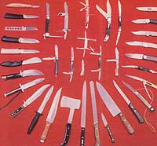

[1] Gerber Paul Lockback, paper Micarta handle. [2] Buck Ranger Lockback, clip point. [3] Rigid Lockback, stainless steel. [4] Parker Lockback, bone handle. [5] Khyber, linen Micarta handle. [6] Camillus .Small Game, Delrin handle. [7] Camillus Fishing, Delrin handle. [8] Puma Fishing, stainless steel with weighing feature. [9] Bator Filet, rosewood handle. [10] Russell Chef, rosewood handle. [11] Gerber Paring, impregnated wood handle. [12] Gerber Bread, impregnated wood handle. [13] Hinckel Carving, wood Micarta handle. [14] Buck Hatchet, linen Micarta handle. [15] RP Indian Bowie Batanced Throwing, wood Micarta handle. [16] Gerber .Survival Dagger, chromeplated tool steel blade. [17] Puma Bowie, stag handle. [18] RP Survival, hollow stainless handle and swedge. [19] Browning Hunting, hollow grind and rosewood handle. [20] Gerber .Skinning, Armorhide aluminum handle. [21] RP General Purpose, Delrin handle. [22] RP General Purpose, Brazilian rosewood handle. [23] RP Backpacker's, one-piece stainless steel handle. [24] Gerber General Purpose, rosewood handle. [25] Hinckel Wood Carving, wood handle. [26] Camillus Rigger with marlinespike. [27] Camillus Army, stainless steel. [28] Colonial .Swiss Army. [29] Schrade Folding Hunter, Uncle Henry Delrin handle. [30] Kabar, Detrin handle. [31] Parker Lockback, bone handle. [32] Robi Klas Kissing Crane, Congress model. [33] Valor Lockback, stainless steel handle. [34] Parker Gentleman's. [35] Frank Buster Fighting Rooster Whittling. [36] Boker Electricians.